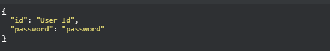

Preface
This document describes the REST End Points provided by Money Box Application for external applications to communicate.
To Execute REST call's, External application must login to Money Box using valid Login Credentials.
We provide Test Programs for reference written in JAVA. External applications developed in other languages can use these programs
as reference.These test programs are available here. There is no advertising URL in MoneyBox.
Please Note that Money Box is running in http now.
Procedure to access the Money Box Resources
- Login to Money Box using Valid login credentials
- Grab the Session id received from the authentication call from HTTP Headers
- For Every Subsequent Request to money box for resource access, add Session Id and X-UserId in the HTTP Headers
- Logout once all operations are done.
Request Headers
The following parameters should be added to all the requests from the external application to MoneyBox
- Content-Type = application/json;charset=UTF-8
- User-Agent =STANDALONE_CODE
- Accept = application/json
Except Login Request, all other requests should have the following additional headers.
- X-userId = User ID
- Cookie = JSESSIONID= + {Session ID received from login request}
Login
URL : /harmoney2/sessionService/authenticate
HTTP Method: POST
Payload:

Test Program
How to extract Session ID from the request Headers
- Iterate over all http headers
- If header name is Set-Cookie, grab the value and retrieve session id.
Sample HTTP Headers

Logout
URL : /harmoney2/sessionService/logout
HTTP Method: GET
Payload: None
Test Program
Getting Stocks for given Branch and Currency
URL : /harmoney2/moos/get-stocks/{branch-name}/{currency}
HTTP Method: GET
Payload: None
Sample Output :
Error Code(s) :
ALL_FINE = 0,
BRANCH_NOT_FOUND = 1
CURRENCY_NOT_FOUND = 2
Example : /harmoney2/moos/get-stocks/Trichy/USD
Test Program
Place Orders
URL : /harmoney2/moos/harmoney2/place-orders/{branch-name}
HTTP Method: POST
Payload:

Example :

Sample Output :

Error Code(s) :
ALL_FINE = 0,
BRANCH_NOT_FOUND = 1
CURRENCY_NOT_FOUND = 2
TRANSACTIONS_MISSING = 3
DEALER_NOT_FOUND = 4
ACCOUNT_NOT_FOUND = 5
ORDER_CREATION_FAILED = 6
UNKNOWN_ERROR = 7
INVALID_INPUT = 8
INSUFFICIENT_STOCKS = 9
Test Program
Note: MOOS should capture receipt id and indiviual transactions id's for later uses like cancel Transaction
Executing Transactions
URL : /harmoney2/moos/harmoney2/execute-transactions/{branch-name}
HTTP Method: POST
Payload:
Example :
Sample Output :

Error Code(s) :
ALL_FINE = 0,
BRANCH_NOT_FOUND = 1
CURRENCY_NOT_FOUND = 2
TRANSACTIONS_MISSING = 3
DEALER_NOT_FOUND = 4
ACCOUNT_NOT_FOUND = 5
ORDER_CREATION_FAILED = 6
UNKNOWN_ERROR = 7
INVALID_INPUT = 8
INSUFFICIENT_STOCKS = 9
Test Program
Note: MOOS should capture receipt id and indiviual transactions id's for later uses like cancel Transaction
Cancel Transactions
URL : /harmoney2/moos/harmoney2/cancel-transaction/{branch-name}/{branchId}/{receiptId}/{transactionId}
HTTP Method: POST
Payload:
Example:
Sample Output :
Error Code(s) :
ALL_FINE = 0,
BRANCH_NOT_FOUND = 1
CURRENCY_NOT_FOUND = 2
TRANSACTIONS_MISSING = 3
DEALER_NOT_FOUND = 4
ACCOUNT_NOT_FOUND = 5
ORDER_CREATION_FAILED = 6
UNKNOWN_ERROR = 7
INSUFFICIENT_STOCKS = 9
ALREADY_DELETED = 10
Test Program
Things to care
- Please Make sure to logout.
- In case session times out, user will be locked and it needs administrator intervention to unlock the user id.
- Multiple failed logins will result in account being locked.